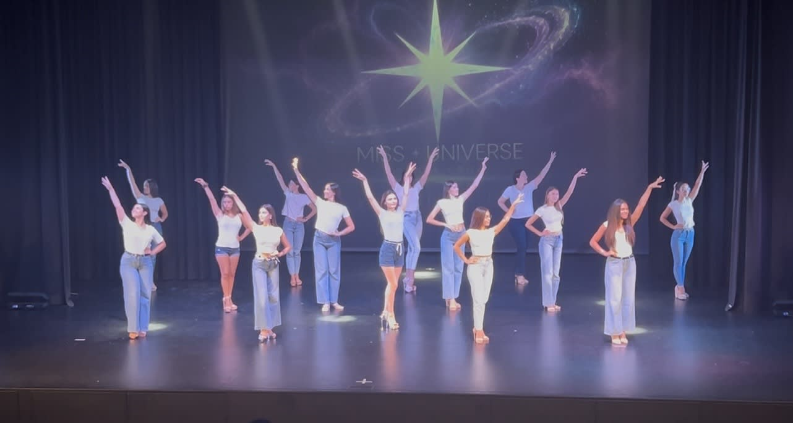
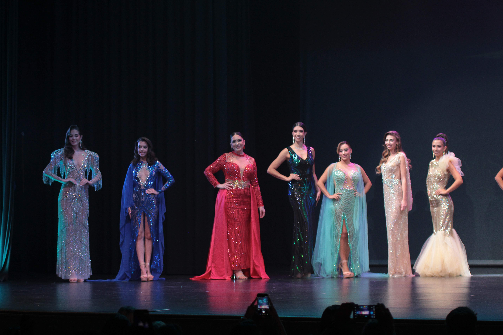

Lo que comenzó como una oportunidad inesperada terminó convirtiéndose en una noche para la historia. En apenas dos meses de trabajo, Miss Universe Santa Cruz consiguió levantar su primera edición oficial y reunir a trece candidatas sobre el escenario del Auditorio Juan Carlos I de Arafo.
La adquisición de la franquicia durante 2026 no estaba prevista inicialmente y obligó a la organización a construir el proyecto a contrarreloj. La planificación, la selección de candidatas, la coordinación de equipos y la preparación de la gala se desarrollaron en un periodo especialmente breve. El resultado fue una primera edición que nació con carácter, identidad propia y una enorme implicación por parte de todas las personas que formaron parte del proceso.

Una jornada que comenzó a las once de la mañana
El día de la gala comenzó a las 11:00 con la llegada de las candidatas, los tres directores y el equipo de trabajo. Desde ese momento se pusieron en marcha los ensayos generales, las pruebas técnicas y la preparación de cada una de las fases previstas para la noche.
La jornada incluyó también la visita institucional del concejal de Fiestas, además de las últimas indicaciones de dirección, la organización del backstage y la preparación de maquillaje y peluquería. Durante horas, el auditorio fue tomando forma mientras candidatas y profesionales trabajaban para que todo estuviera listo antes de la apertura de puertas.
El jurado comenzó a trabajar antes de la entrada del público
A las 20:00, cuando aún no había comenzado el acceso del público, el jurado inició una parte fundamental de su valoración. Sus integrantes visualizaron los vídeos de presentación de las trece candidatas, una primera toma de contacto destinada a conocer mejor su perfil, su forma de expresarse y su personalidad.
Esta evaluación previa permitió que la decisión final no dependiera únicamente de lo ocurrido sobre el escenario. El jurado contó con información adicional antes de observar a las candidatas en las distintas fases en directo.

La cuenta atrás y el comienzo de la gala
Las puertas del auditorio se abrieron a las 20:30. Poco a poco, familiares, colaboradores, invitados y público general fueron ocupando sus localidades mientras el equipo terminaba de resolver los últimos detalles técnicos.
La gala comenzó aproximadamente a las 20:45. Después de un emotivo homenaje a Venezuela, cuando se apagaron las luces y sonaron los primeros acordes del opening, las trece candidatas aparecieron sobre el escenario para dar inicio oficial a la primera edición de Miss Universe Santa Cruz.
Trece candidatas y varias fases para mostrar su evolución
La competición fue planteada como un recorrido por distintas facetas de las participantes. Tras el opening llegó la presentación individual, seguida del pase de baño y la gala de noche. Cada fase permitía observar elementos diferentes: seguridad, presencia escénica, pasarela, naturalidad, comunicación y capacidad para desenvolverse bajo presión.
El desarrollo de la noche no buscaba únicamente mostrar una imagen estética. La estructura permitió que el jurado observara a cada candidata en contextos distintos antes de seleccionar a las finalistas.

“La primera edición no solo coronó a una reina: dio inicio a un proyecto construido en tiempo récord.”
El Top 5 de la primera edición
Tras las primeras fases, el jurado anunció a las cinco candidatas que continuaban en competición. El Top 5 quedó formado por:
A partir de ese momento, la comunicación adquirió un peso todavía mayor. Cada una de las cinco finalistas tuvo que responder individualmente a una pregunta, una prueba pensada para valorar su seguridad, naturalidad, capacidad de reacción y forma de expresarse ante el jurado y el público.
La ronda de preguntas y la elección del Top 3
La ronda de preguntas elevó la tensión de la noche. Las cinco finalistas afrontaron uno de los momentos más exigentes de la competición, ya que debían responder sin preparación previa y demostrar claridad en un contexto de máxima presión.
Tras esta fase, el jurado realizó una nueva deliberación y anunció el Top 3, integrado por Daniela Martínez Morales, Danna Hernández Cruz y Valeria Gorrín Samblas.

Un Minuto de Oro para convencer al jurado
Las tres finalistas afrontaron entonces el Minuto de Oro, la última prueba de la noche. Cada una dispuso de sesenta segundos para dirigirse al jurado y al público, compartir su visión y ofrecer un último argumento antes de la deliberación final.
Este momento permitió valorar no solo el contenido de sus palabras, sino también la forma de transmitirlas, la seguridad sobre el escenario y la capacidad para representar a la organización durante el año de reinado.
Daniela Martínez Morales, primera Miss Universe Santa Cruz
Tras la deliberación final, Daniela Martínez Morales fue proclamada Miss Universe Santa Cruz 2026. Su nombre fue anunciado en medio de los aplausos, dando paso a la imposición de la banda y la corona que la acreditaban como primera ganadora de la historia de la organización.
La coronación puso fin a la competición, pero abrió una nueva etapa para Daniela, para el Top 3 y para el proyecto. Aquella noche quedó oficialmente inaugurado un año de representación, preparación y nuevas oportunidades.

Una gala construida por un gran equipo
Detrás del escenario hubo un trabajo colectivo que hizo posible la primera edición. Dirección, estilismo, maquillaje, peluquería, fotografía, producción, patrocinadores, colaboradores, voluntariado y equipo técnico formaron parte de una jornada intensa que comenzó muchas horas antes de la llegada del público.
La gala fue el resultado de una suma de esfuerzos coordinados en muy poco tiempo. Cada profesional aportó su experiencia para convertir una oportunidad inesperada en un evento real y en el comienzo de una nueva etapa para Miss Universe Santa Cruz.
El comienzo de una nueva historia
Lo que comenzó como un reto inesperado terminó convirtiéndose en el nacimiento oficial de Miss Universe Santa Cruz. La primera edición, organizada en un tiempo récord, sentó las bases de un proyecto con vocación de continuidad y crecimiento.
Aquella noche del 6 de julio de 2026 dejó trece candidatas, cinco finalistas, un Top 3 y una primera reina. Pero, sobre todo, dejó el inicio de una historia que la organización comenzaba a construir desde ese mismo momento.